8.1 Trộn văn bản
Đây là một chức năng trong Word hỗ trợ người dùng phải thường xuyên thiết kế các biểu mẫu (thư mời, thư ngỏ, phiếu thông báo, quảng cáo…) và phải in ấn hoặc gửi email cho rất nhiều khách hàng, các mẫu này đa phần là giống nhau toàn bộ về hình thức trình bày cũng như nội dung, chỉ khác nhau chút ít về thông tin khách hàng. Danh sách khách hàng đã có sẵn và được thu thập từ lâu. Do đó, chỉ cần thiết kế một lần biểu mẫu và có thể được nhân bản ra rất nhiều các biểu mẫu khác tương ứng với thông tin của khách hàng một cách chính xác và nhanh gọn.
8.1.1 Thiết lập chức năng trộn văn bản
Để tiến hành làm chức năng trộn thì ta phải có: Biểu mẫu và danh sách (dùng để đổ thông tin vào biểu mẫu khi trộn). Như vậy ta thiết kế biểu mẫu trước để đáp ứng nhu cầu sử dụng sau đó dùng chức năng trộn văn bản để nhân bản các biểu mẫu này ra theo đúng với số lượng và thông tin trong danh sách. Do đó, người dùng cần phải có có 2 tập tin độc lập.
Ví dụ ta cần làm một mẫu đăng ký mua tập chí như sau (lưu với tên mẫu_ĐK.docx):
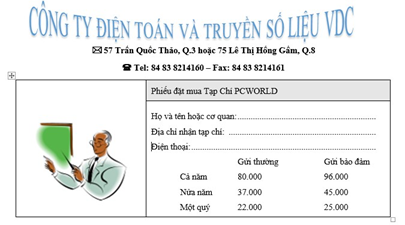
- Danh sách khách hàng (có thể lưu trong word, excel … hoặc nhập vào trong quá trình trộn thư):
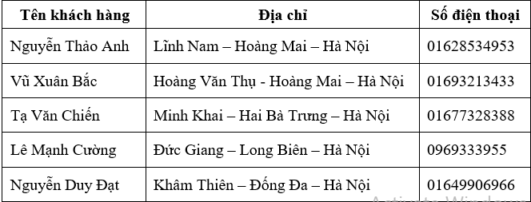
Các bước cụ thể để thực hiện chức năng trộn văn bản (danh sách nhập trong quá trình trộn văn bản). Ví dụ sử dụng file bên trên mẫu_ĐK.docx:
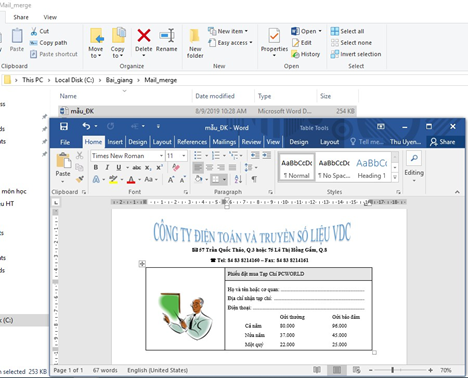
- Bước 1: Mở tập tin mẫu_ĐK.docx, vào tab Mailings/
Start Mail Merge/ chọn Letters
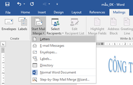
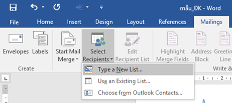
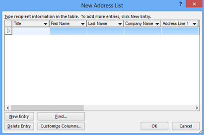
Ta vào Customize Columns…
Để hiệu chỉnh cột thông tin (thêm, sửa, xóa cột) cho theo đúng với mục đích sử dụng:
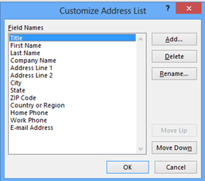
- Nút Add…: Để thêm một cột mới.
- Nút Delete: Để xóa cột đang chọn.
- Nút Rename…: Để chỉnh sửa cột đang chọn.
- Nút Move Up: Để di chuyển thứ tự của cột đang chọn lên bên trên.
- Nút Move Down: Để di chuyển thứ tự của cột đang chọn xuống bên dưới.
Ví dụ: Ta muốn thêm một cột mới tên là “Tên Khách Hàng”: Bấm chuột vào nút “Add…”/ của sổ Add Field hiển thị lên như bên cạnh, ta nhập thông tin rồi nhấn nút OK để thêm cột mới. Tượng tự như vậy ta dùng các thao tác Delete để xóa các cột không cần thiết.
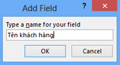
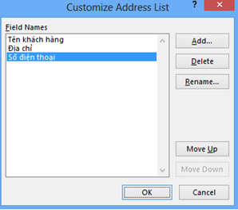
- Hiệu chỉnh đủ 3 cột như trên rồi nhấn nút OK để trở về màn hình
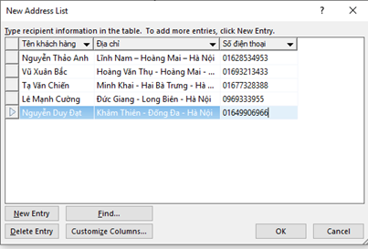
Nhập thông tin khác hàng theo nhu cầu sử dụng.
- New Entry: Thêm dòng mới để nhập dữ liệu (ta có thể nhấn phím Tab ở dòng cuối cùng để tự động tạo thêm dòng mới).
- Delete Entry: Xóa dòng dữ liệu đang chọn.
- Bấm nút OK để lưu danh sách (nên lưu cùng chỗ với tập tin thumoi.docx để dễ quản lý):
Tập tin được lưu này sẽ có định dạng là Microsoft Access, ta xem màn hình chụp nơi lưu trữ danh sách (đuôi .mdb):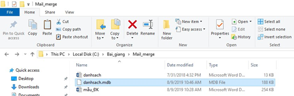
- Bước 2: Hiệu chỉnh danh sách (nếu có), bấm chọn Edit Recipient List để hiệu chỉnh. Tại đây muốn bỏ dòng dữ liệu nào thì ta bỏ Tick khỏi dòng đó, chức năng này ít được sử dụng vì mặc nhiên danh sách nhập vào chính là mong muốn nhân bản biểu mẫu của người sử dụng.
- Bước 3: Chèn dữ liệu vào biểu mẫu, muốn chèn dữ liệu vào vị trí nào thì di chuyển con trỏ văn bản vào vị trí đó trước, rồi vào Insert Merge Field / chọn đúng tên cột hiển thị:
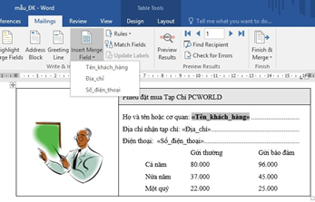
- Bước 4: Xem trước kết
quả, chọn Preview Results:
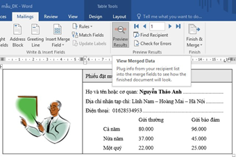
Để di chuyển qua lại giữa các nhân bản của biểu mẫu, ta bấm vào các biểu tượng kế bên nút PreView Results:
- Bước 5: Kết thúc quá trình trộn thư, trong tab Mailings ta chọn nút Finish & Merge:
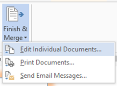
Edit Individual Documents…: Xuất các nhân bản biểu mẫu vào một tập tin (mỗi dòng dữ liệu sẽ
tạo lên một biểu mẫu nằm ở 1 trang riêng biệt,
tức là nếu ta có 5 dòng dữ liệu thì sẽ tự động
tạo ra 5 biểu mẫu nằm ở 5 trang khác nhau), tên mặc định là Letters1
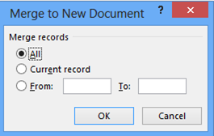
- All: Trộn toàn bộ danh sách.
- Current record: Trộn dòng dữ liệu hiện tại đang xem (ở bước 5).
- From … To : Trộn danh sách từ vị trí X tới vị trí Y (ví dụ From: 2, To: 4 thì trộn danh sách từ dòng thứ 2 tới dòng thứ 4).
Bấm OK để xem kết quả:
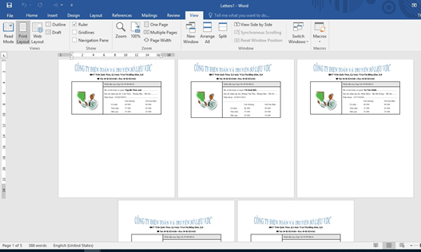
Hình 4.69. Kết quả sau khi thực hiện trộn thư
Ta nên lưu lại kết quả cùng chỗ với danh sách và biểu mẫu (ví dụ: ketquatronthu.docx)
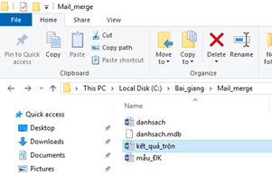
Vậy cuối cùng ta có tổng cộng là 3 tập tin như hình trên, từ đây ta có thể in ấn, gửi email trong tập tin ketquatronthu.docx.
Print Documents…: Dùng để in ấn kết quả trộn thư ra giấy trực tiếp trong quá trình trộn thư
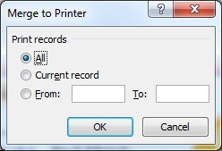
- All: In toàn bộ danh sách trộn thư.
- Current record: In dòng dữ liệu hiện tại đang xem (ở bước 5).
- From … To : In danh sách trộn từ vị trí X tới vị trí Y (ví dụ From: 2, To: 4 thì trộn danh sách từ dòng thứ 2 tới dòng thứ 4).
- Send E-Mail Messages…: Gửi thông tin trộn thư qua email (tất nhiên phải sửa lại danh sách là bổ sung thêm cột email, chức năng này ta ít sử dụng, vì ta thường tách ra tập tin để in ấn hoặc gửi email trên website bằng tập tin kết quả, hoặc do máy ta đang sử dụng chưa cấu hình Mail Server để gửi).
8.1.3 Tạo một thư trộn sử dụng từ danh sách ngoài
Vẫn sử dụng các file ví dụ như phần bên trên, tuy nhiên ở đây sẽ tạo ra một file chứa dữ liệu cần trộn vào mẫu đăng ký, file đó được đặt tên là danhsach.docx (người dùng có thể tạo ra file danh sách này trên các ứng dụng Excel hoặc Access)
- Bước 1: Vào Mailings/
Start Mail Merge/chọn Letters
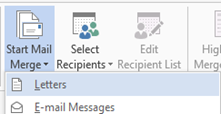
- Bước 2: Vào Mailings/ Select Recipients/ chọn Use Existing List…
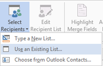
- Trong màn hình Select Data Source: Ta tìm tới đúng tập tin danhsach.docx rồi
bấm Open.
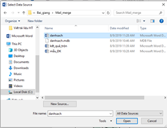
- Bước 3: Chèn dữ liệu vào biểu mẫu, tương tự như đã làm ở phần trước, ta di chuyển con trỏ văn bản vào nơi cần chèn rồi vào Insert Merge Field/ chọn đúng cột thông tin cần chèn.
- Các bước còn lại trong quá trình trộn văn bản giống như đã trình bày ở phần trên.
8.1.4 Tạo nhãn và bao thư
- Chức năng trộn bao thư:
Chức năng này cũng dựa vào danh sách có sẵn của phần trước đã minh họa, các bước làm như sau:
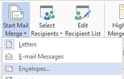
Cửa sổ chọn bao thư sẽ xuất hiện như bên dưới:
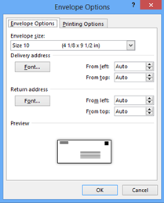
- Preview: Xem trước định dạng bao thư khi được in ra
- Envelope Size: Lựa chọn kích thước của bao thư.
- Delivery Addres: Hiệu chỉnh font chữ in trên địa chỉ người nhận.
- Return Address: Hiệu chỉnh font chữ in trên địa chỉ người gửi.
Bấm Ok để lưu hiệu chỉnh.
- Bước 2: Chọn danh sách để trộn bao thư (danh sách khách hàng ta muốn gửi thư tới), ở ví dụ trước ta lưu trong tập tin (danhsach.docx):
Vào tab Mailings/chọn Select Recipients/chọn Use Existing List… rồi trỏ tới đúng tập tin mà ta lưu trữ danh sách muốn gửi thư tới.
- Bước 3: Hiệu chỉnh danh sách (nếu có nhu cầu), chọn nút Edit Recipient List.
- Bước 4: Chèn dữ liệu vào bao thư. Bước này giống như phần trộn thư đã hướng
dẫn, ở đây ta thiết kế và chèn dữ liệu sao cho phù hợp, ví dụ:
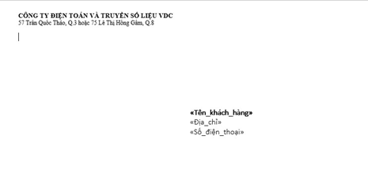
- Bước 5: Xem trước kết quả (bấm chọn Preview Results như đã hướng dẫn ở phần trước).
- Bước 6: Kết thúc quá trình trộn bao thư (bấm chọn Finish & Merge như đã hướng dẫn ở phần trước).
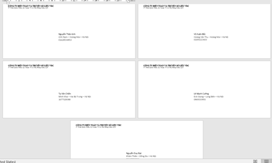
Hình 4.71. Kết quả sau khi trộn bao thư
- Chức năng trộn nhãn:
Tương tự ta cũng có các bước dưới đây:
- Bước 1: Trong tab Mailings vào Start Mail Merge/ chọn Labels…
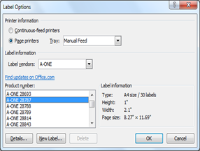
+ Printer Information: Lựa chọn loại khay in, mặc định là Default tray (dĩ nhiên nó phụ thuộc vào máy tính ta đang sử dụng).
+ Label information: Lựa chọn nhà cung cấp giấy, ở đây ta sẽ chọn loại và kích cỡ giấy phù hợp với nhãn mà ta sẽ in (nên chọn A-ONE).
+ Product number: Gợi ý chọn
A-ONE 28787 dùng cho loại 30 nhãn, tùy vào nhu cầu mà ta chọn các product number khác nhau. Để xem chi tiết cho từng loại ta bấm vào nút Details
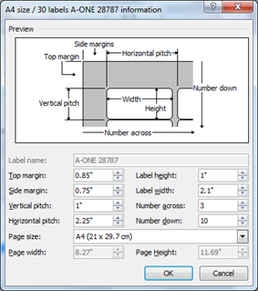
Hình 4.72. Thông tin chi tiết cho từng loại version
- Bước 2: Chọn danh sách để trộn (như hướng dẫn ở các phần trên).
- Bước 3: Hiệu chỉnh danh sách (nếu có nhu cầu), chọn nút Edit Recipient List.
- Bước 4: Chèn dữ liệu vào văn bản.
- Bước 5: Xem trước kết quả (như hướng dẫn ở các phần trên).
- Bước 6: Kết thúc quá trình trộn (như hướng dẫn ở các phần trên).
Mục lục là danh sách các chỉ mục có trong văn bản, giúp cho việc tra cứu tài liệu trở nên dễ dàng, nhanh chóng hơn. Trong Word cho phép người dùng tiến hành tạo mục lục một cách tự động tự động (bảng chỉ mục tự động). Tạo tự động tức là Word sẽ tự quét tất cả các chỉ mục có trong văn bản và đưa ra danh sách chỉ mục này mà người dùng không cần soạn thảo bằng tay. Ngoài ra khi tạo mục lục tự động thì các chỉ mục sẽ được cập nhật nếu như có những thay đổi từ người dùng về nội dung chỉ mục, số trang mà chỉ mục đó xuất hiện chỉ bằng một thao tác bấm chuột.
Vị trí của mục lục thường nằm ở đầu hoặc cuối văn bản, tùy nhu cầu của người dùng mà xác định vị trí, đồng thời mục lục sẽ nằm trên một trang mới, riêng biệt. Như vậy sau khi đặt đúng vị trí con trỏ văn bản cần chèn Mục lục, người dùng vào tab References/ chọn Table of Contens/chọn Custom Table of Contents.. (xem hình).
Tuy nhiên, trước khi thực hiện thao tác chèn mục lục này, người dùng phải áp dụng định dạng chèn Style vào các chỉ mục của văn bản (trong mục 1.7.3), có thể sử dụng các Style sẵn có của Word hoặc tạo ra các Style mới của riêng mình. Vì vậy, người dùng cần nắm rõ cách tạo Style, đa cấp để có thể tạo mục lục một cách nhanh chóng và dễ dàng hơn.
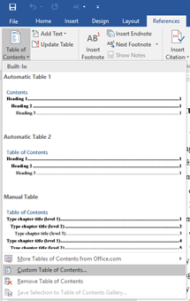
Hình 1.73. Tạo bảng chỉ mục
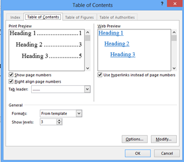
Bấm chọn Options để hiển thị bảng Table of Contents Options như bên dưới:
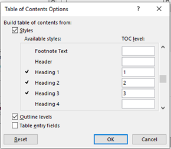
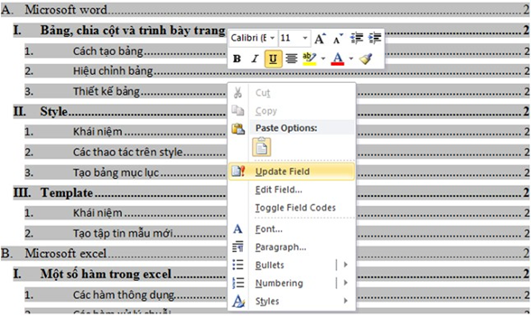
Hình 4.74. Kết quả tạo mục lục tự động
Như vậy ta được kết quả là: Bảng mục lục sẽ được tự động tạo ra và nằm ở trang số 1,
còn phần nội dung (bảng đa cấp) nằm ở trang số 2. Từ đây ta có thể nhập dữ liệu
cho phần nội dung. Phần mục lục sẽ
được cập nhập bằng thao tác: Bấm chuột phải vào vị trí bất kỳ trong mục
lục/ chọn Update Field (hình 1.74):
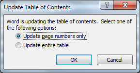
- Update page numbers only: Cập nhật số trang cho bảng mục lục (khi nhập dữ liệu cho phần nội dung thì số trang sẽ tăng lên, ta dùng chức năng này để đồng bộ số trang cho mục lục).
- Update entire table: Cập nhật tiêu đề cho mục lục (thường thì chỉ nên cập nhật khi chưa nhập nội dung, vì bảng đề cương chi tiết phải được chấp nhận là đúng đắn trước khi được nhập dữ liệu).